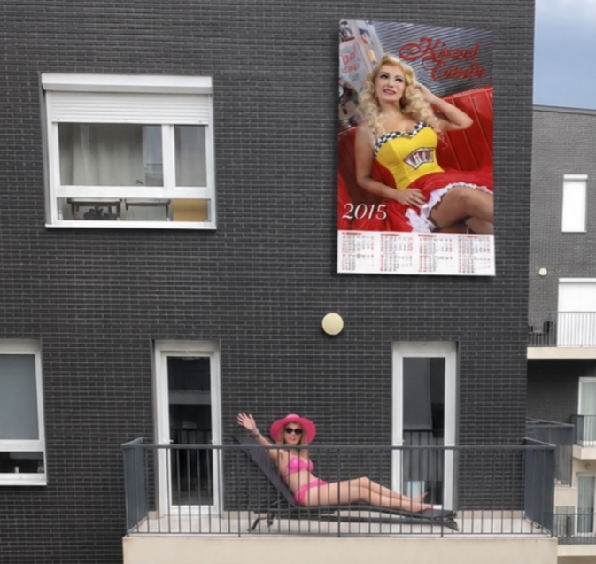

🚗
BMW
Szia Isti, hosszú volt a nap mi? Menjünk haza?
🙋
Isti
Igen és még a megígért mazsolámat sem kaptam meg, irány haza!
Irány haza! 🚗
☀️ Üdvözöllek szomszéd, milyen szépen süt itt a nap ma a Pápay parkban. Már meg is rendeltem a pizzádat, fél óra múlva jön!
